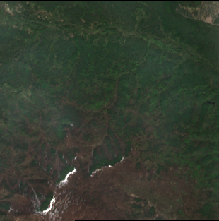

Week 2 — Dataset Study and Disaster Data Planning
Planned Work
- Understanding the annotation methods in order to create change masks for Images
- Identify regions affected by disasters for dataset planning
- Exploring available open source satellites for disaster data planning
Findings
Observations
- Google earth engine provides a powerful platform for accessing and analyzing satellite imagery.
- Sentinel satellites offer high-resolution imagery suitable for disaster monitoring and change detection.
- Found several regions that were recently affected by tsunami, Wildfire.
Decisions
- Use Google Earth Engine for accessing and analyzing satellite imagery.
- Focus on Sentinel satellites for high-resolution imagery suitable for disaster monitoring and change detection.
Figures


Next Week
Week 3 — Controlled Benchmark Design
Exploring State of the art Vision Encoders and their performance review.